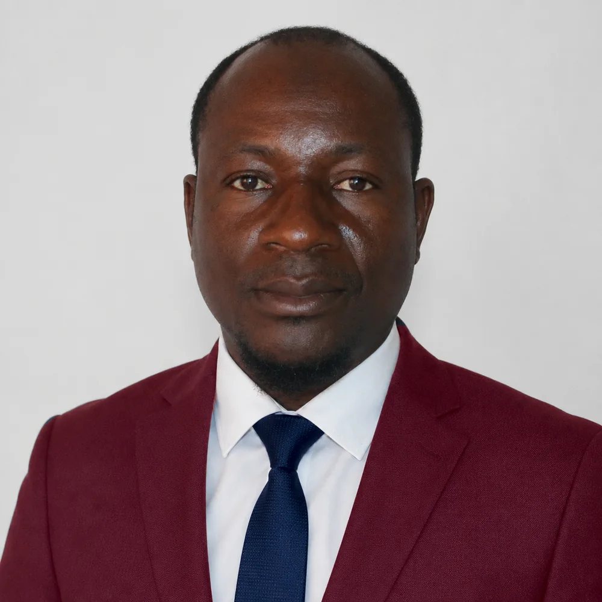
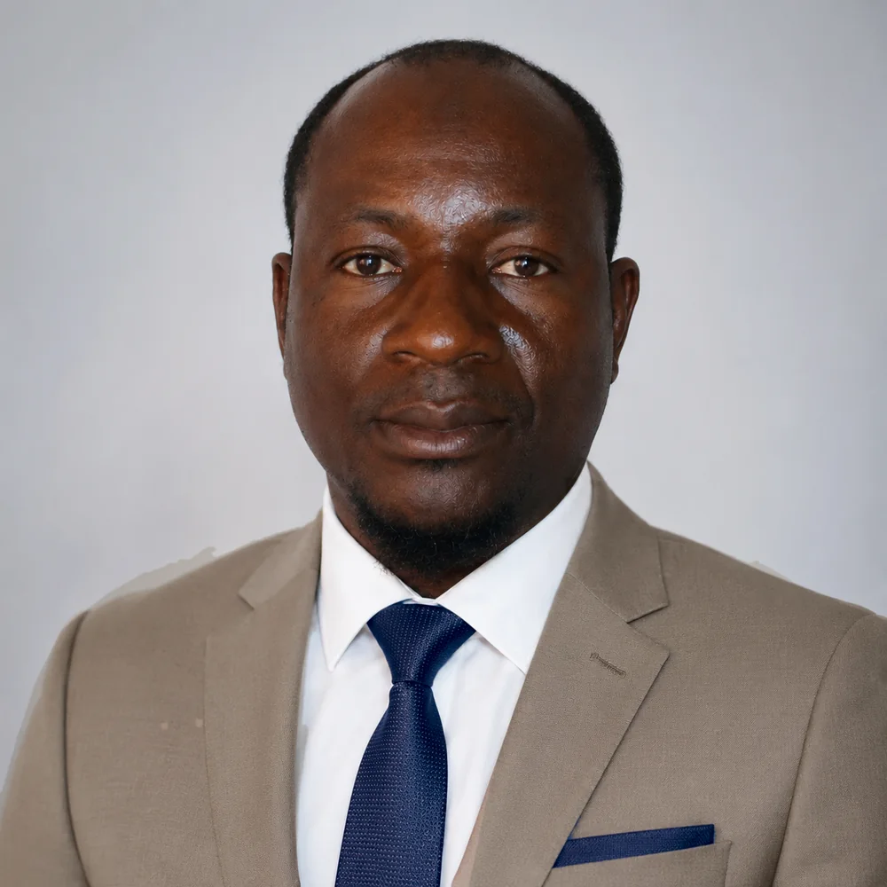
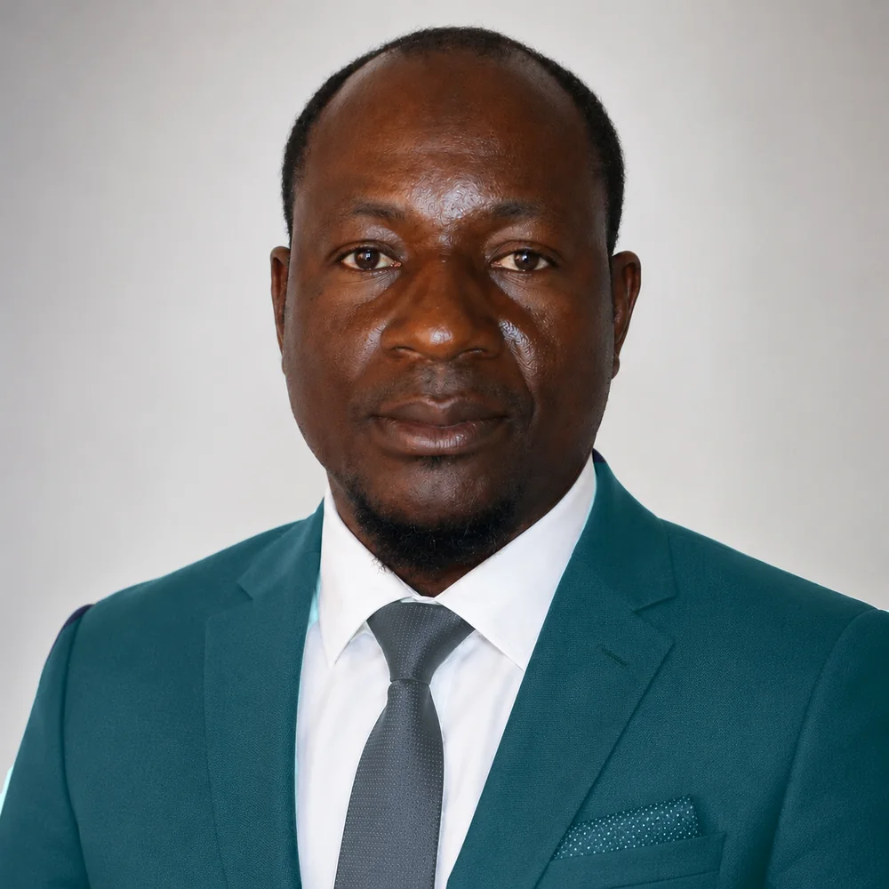
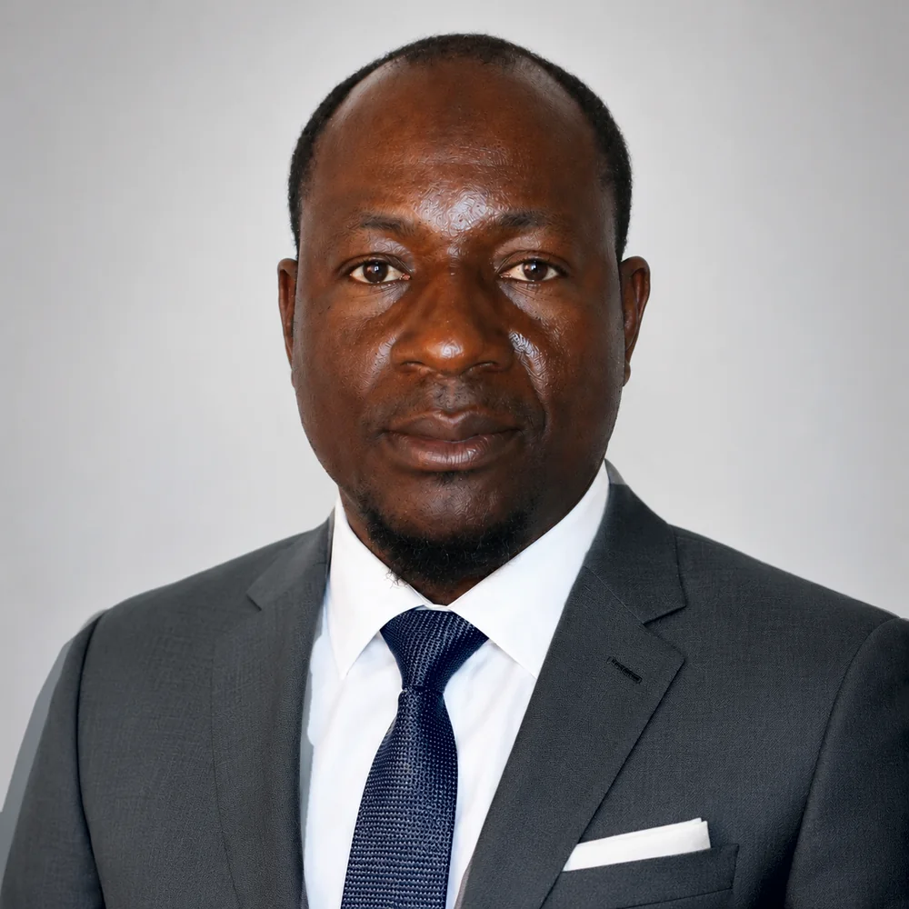

Pilotage de projets
Conception, coordination et gestion de projets de développement, du diagnostic au rapportage.
Planification de Développement • Action humanitaire • Renforcement de capacités • Études & Suivi-évaluation • SIG & Data analytics
Concevoir, piloter et évaluer des projets à fort impact grâce à l'expertise de terrain et à l'intelligence des données.
Une expertise construite auprès de la FAO, d'organisations internationales et d'acteurs du développement au Mali et en Afrique de l'Ouest.




Suivi-évaluation, analyse de données et SIG / cartographie
Renforcement de capacités sur les approches de développement participatives et sensibles au genre
Appui à l'élaboration des plans, facilitation et conseil pour les processus de développement
Études diagnostiques environnementales et sociales
J'accompagne les agences des Nations Unies, les ONG, les institutions publiques, les entreprises et les bailleurs de fonds dans la conception, la coordination et le suivi-évaluation de projets de développement, d'environnement et de réponse humanitaire.
Conception, coordination et gestion de projets de développement, du diagnostic au rapportage.
Dispositifs de suivi, indicateurs, collecte et analyse de données, évaluations et rapportage.
Projets de sécurité alimentaire et nutritionnelle, approches communautaires et développement rural.
Réponse d'urgence, ciblage des bénéficiaires, coordination entre acteurs, plans communaux d'urgence.
Cartographie, bases de données, tableaux de bord et analyse statistique.
Formation, coaching et accompagnement d'équipes, de facilitateurs et de leaders communautaires.
Quatre communes du cercle de Dioïla (Kaladougou, N'Garadougou, Dègnékoro, Kilidougou), pour KILABO, ONU Femmes et le WPHF. Rôle : consultant national chargé du renforcement des capacités.
Dispositif de collecte et de tableau de bord pour la Coordination régionale des ONG de Bougouni : trois classeurs, circuit de saisie en six étapes, tests 36/36.
Dix ans d'animation et de suivi-évaluation des Clubs d'écoute communautaires au Mali : plus de 1 500 clubs suivis, plus de 7 000 leaders formés.
Agences, ONG, institutions, entreprises
Intervention directe en tant que consultant national indépendant : cadrage, conduite de la mission, livrables validés avec vous.
Cabinets, groupements, réponses à appels d'offres
Expert national intégré à votre équipe : contribution à une offre, puis mise en œuvre sur le terrain.
Organisations nationales, collectivités, associations
Accompagnement dans la durée : outils, procédures, formation du personnel, dispositifs de suivi.
« Par son professionnalisme et son leadership technique, Monsieur Sidi Koné s'est affirmé comme un Spécialiste des Dimitra Clubs de référence au Mali et en Afrique de l'Ouest. »
Mme Andrea Sanchez Enciso — Responsable internationale du programme des Clubs Dimitra, FAO
Toutes les références →Un projet à concevoir, une évaluation, une cartographie, un dispositif de suivi à mettre en place ? Parlons-en.